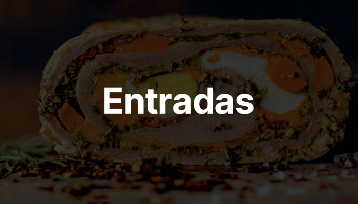

Entradas
Principales
Postres
¿Tenés un antojo? ¿No sabés qué cocinar?
En
Tenedor Libre
hacemos la cocina fácil, práctica y participativa, motivando a las personas a cocinar y reconectarse con lo que comen.
